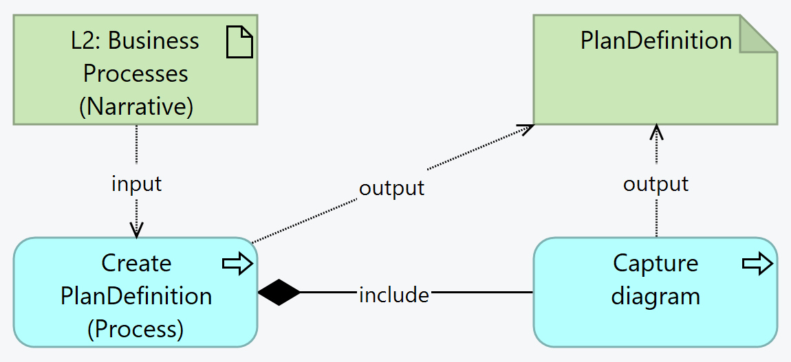

SMART Guidelines Starter Kit
2.1.0 - ci-build

SMART Guidelines Starter Kit
2.1.0 - ci-build

SMART Guidelines Starter Kit, published by WHO. This guide is not an authorized publication; it is the continuous build for version 2.1.0 built by the FHIR (HL7® FHIR® Standard) CI Build. This version is based on the current content of https://github.com/WorldHealthOrganization/smart-ig-starter-kit/tree/L4-compliance.md and changes regularly. See the Directory of published versions
Business processes are structured into FHIR PlanDefinitions. This can be used to fully structure and define business business processes like what's done in BPM+, BPMN, etc. but most commonly the main goal is to keep inventory of the business processes as well as their the dependencies between processes, processes and actors, etc.
The L3 author must ensure there is a PlanDefinition for each Business Process mentioned in the L2.
The data required to be captured for each Business Process is:

Summary: From the L2 Business Process, the L3 author creates a PlanDefinition to illustrate the business process.
action element:
before-start relationship should be favored, and that relationships should only be characterized in one direction)For more information, see the Mapping and Other Formalisms topic in the Clinical Practice Guidelines implementation guide.
As with all FHIR Conformance resources, change management is critical. Do not set the version element of PlanDefinitions defined in the SMART Guideline, the version element will be set by the publication process. See the versioning topic for more information on change management.